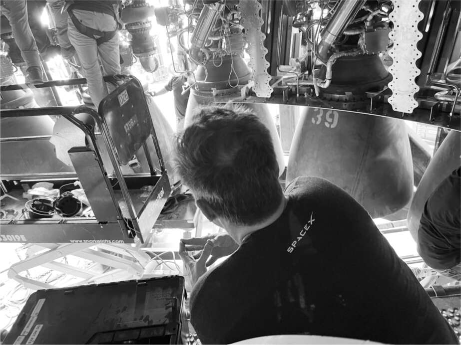

Luôn cảnh giác với sự tự mãn, đầu năm 2022, Musk quyết định rằng đã đến lúc tạo ra một bước đột phá khác ở Boca Chica. Đã sáu tháng kể từ khi ông thúc đẩy Andy Krebs và nhóm ở miền nam Texas lắp ráp Starship trên bệ phóng. Giờ đây, ông muốn có một buổi giới thiệu công khai về tên lửa này. Lần này, hai tầng sẽ được lắp ráp bởi cánh tay đũa của Mechazilla.
Bill Riley cảnh báo rằng sẽ rất khó để hoàn thành việc này trước cuối tháng 2, vì vậy Musk đã sử dụng Twitter như một công cụ thúc đẩy. Ông đăng trên Twitter rằng sẽ có một buổi trưng bày Starship trước công chúng vào lúc 8 giờ tối thứ Năm, ngày 10 tháng 2 năm 2022.
Tối hôm diễn ra buổi thuyết trình, ông dùng bữa tối tại Flaps, nhà hàng phong cách thoải mái dành cho nhân viên SpaceX. Cùng tham gia với ông là ba giám đốc hàng đầu của NASA, đều là nữ: Janet Petro của Trung tâm Vũ trụ Kennedy tại Cape Canaveral, Lisa Watson-Morgan của Chương trình Hệ thống Hạ cánh Có người lái và Vanessa Wyche của Trung tâm Vũ trụ Johnson ở Houston.
X lững thững tiến đến bàn và bắt đầu ăn sốt phô mai xanh bằng nĩa. Musk nói đùa rằng X đóng vai trò là "vật dụng dễ thương" của mình. Petro thì thầm với tôi, "Tôi đang cố kìm nén bản năng làm mẹ của mình", nhưng cuối cùng bà cũng chịu thua và lấy cái nĩa khỏi tay cậu bé, đưa cho cậu một cái thìa.
"Nó gan lắm", Musk nói. "Nó có lẽ cần thêm chút bản năng sợ hãi. Đó là di truyền." Đúng vậy, nhưng đó cũng là kết quả của cách nuôi dạy phóng khoáng của Musk. Bản chất của Musk không phải là người hay chiều chuộng.
"Falcon chín", X nói, chỉ tay về phía xa.
"Không", cha cậu bé sửa lại. "Starship."
"Mười, chín, tám", X nói.
"Mọi người nói thằng bé thông minh vì có thể đếm ngược", Musk nói. "Nhưng tôi không chắc nó có thể đếm xuôi."
Musk hỏi các vị khách NASA xem họ có con không, và câu trả lời của họ khiến ông lại một lần nữa chia sẻ suy nghĩ của mình về việc tỷ lệ sinh giảm đang là mối đe dọa cho tương lai của ý thức loài người. "Trong số bạn bè của tôi, số con trung bình là một", ông nói. "Một số thì không có. Tôi cố gắng làm gương." Ông không đề cập đến việc ông vừa có thêm ba đứa con.
Cuộc trò chuyện chuyển sang Trung Quốc, quốc gia duy nhất đang thực hiện nhiều sứ mệnh quỹ đạo như SpaceX. Bản thân NASA thậm chí còn không tham gia cuộc chơi. "Nếu Trung Quốc lên Mặt Trăng trước chúng ta một lần nữa, đó sẽ là một khoảnh khắc Sputnik", ông nói với các giám đốc NASA. "Sẽ là một cú sốc khi chúng ta thức dậy và nhận ra họ đã lên Mặt Trăng trong khi chúng ta đang kiện cáo lẫn nhau." Ông nói rằng khi đến thăm Trung Quốc, ông thường được hỏi làm thế nào để đất nước này có thể đổi mới hơn. "Câu trả lời tôi đưa ra là hãy thách thức quyền uy."
Sau đó vào buổi tối, một đám đông gồm vài trăm công nhân, phóng viên, quan chức chính phủ và người dân địa phương tập trung trước Starship được xếp chồng lên nhau, được chiếu sáng bởi đèn pha. "Phải có những điều truyền cảm hứng cho bạn, lay động trái tim bạn", Musk nói trong bài phát biểu của mình. "Trở thành một nền văn minh du hành vũ trụ, biến khoa học viễn tưởng thành hiện thực, là một trong số đó." Trong buổi thuyết trình, tôi ngồi bên cạnh Krebs, người vẫn chưa quyết định rời SpaceX, và chúng tôi nói về việc anh ấy đã sống sót như thế nào khi đứng trước làn đạn của Musk tại địa điểm này bảy tháng trước đó. Khi tôi hỏi liệu điều đó có xứng đáng không, anh ấy gật đầu về phía Mechazilla. "Mỗi khi tôi nhìn thấy tòa tháp, trái tim tôi lại bay bổng", anh ấy nói.
Sau buổi thuyết trình, Musk đi lang thang đến một nhóm người tụ tập tại quán bar tiki phía sau tòa nhà Starbase chính. Vài phút sau, phi hành gia Inspiration4 Jared Isaacman, người đã tự lái máy bay phản lực hiệu suất cao của mình đến buổi thuyết trình, tham gia cùng nhóm.
Isaacman có một sự khiêm tốn tự tin lặng lẽ khiến Musk thoải mái. Ông nhận xét, thật tốt khi Musk quyết định không tự mình lên vũ trụ sau khi Branson và Bezos làm vậy. "Đó sẽ là cú đánh thứ ba", ông nói. Nó sẽ trông giống như sự tự luyến của những cậu bé tỷ phú. "Chúng ta đã suýt nữa thì người Mỹ nói 'Quỷ tha ma bắt không gian'."
"Đúng vậy", Musk nói với một tiếng cười chua chát, "tốt hơn là nên gửi bốn người lên từ trung tâm tuyển chọn diễn viên."
Đến tháng 7 năm 2022, vệ tinh Starlink sản xuất tại Seattle bắt đầu chất đống. Tên lửa Falcon 9 được phóng từ Cape Canaveral ít nhất mỗi tuần một lần, mỗi chuyến mang theo khoảng năm mươi vệ tinh Starlink lên quỹ đạo. Nhưng Musk đã kỳ vọng con tàu vũ trụ Starship khổng lồ sẽ thường xuyên được phóng từ bệ phóng ở Boca Chica vào thời điểm đó. Như thường lệ, ông đã không thực tế về lịch trình.
“Anh có muốn tôi cử vài người xuống Boca không?” Mark Juncosa, người đã chuyển đến Seattle để giám sát sản xuất Starlink, hỏi.
“Có,” Musk trả lời. “Anh cũng nên đến đó.” Đã đến lúc phải cải tổ quản lý. Đầu tháng 8, Juncosa đã lướt qua các lều lắp ráp ở Boca Chica như một cơn lốc, cuốn tung bụi mù.
Juncosa được thừa hưởng phần nào sự điên rồ của Musk. Với mái tóc rối bù và đôi mắt còn hoang dại hơn, anh ta nhảy nhót và xoay điện thoại theo cách tạo ra một trường năng lượng cao xung quanh mình. "Anh ấy khá lôi cuốn theo kiểu ngốc nghếch nhưng cứng rắn," Musk nói. "Anh ấy có thể nói với mọi người rằng họ đang làm hỏng việc và ý tưởng của họ thật tệ, nhưng làm điều đó theo cách không khiến họ tức giận. Anh ấy là Mark Antony của tôi."
Musk và Juncosa thích đội ngũ ở Boca Chica, đặc biệt là Riley và Patel, nhưng cảm thấy họ chưa đủ cứng rắn. "Bill là một người tuyệt vời, nhưng anh ấy khó đưa ra phản hồi tiêu cực cho bất kỳ ai và không thể sa thải ai," Musk nói với tôi. Chủ tịch SpaceX, Gwynne Shotwell, cũng cảm thấy như vậy về Patel, người đã giám sát việc xây dựng các cơ sở. "Sam làm việc rất chăm chỉ," bà nói, "nhưng anh ấy không biết cách báo tin xấu cho Elon. Sam và Bill nhát gan."
Musk đã tổ chức một cuộc gọi video với nhóm Starship vào ngày 4 tháng 8 từ phòng họp tại Giga Texas, nơi ông đang chuẩn bị cho cuộc họp cổ đông thường niên của Tesla chiều hôm đó. Khi họ trình bày các slide, ông ngày càng tức giận. "Những mốc thời gian này thật nhảm nhí, một thất bại lớn," ông nói. "Không đời nào chúng lại mất nhiều thời gian như vậy." Ông ra lệnh rằng họ sẽ bắt đầu họp về Starship mỗi đêm, bảy ngày một tuần. "Chúng ta sẽ xem xét lại mọi thứ từ đầu mỗi đêm, đặt câu hỏi về các yêu cầu và loại bỏ," ông nói. "Đó là những gì chúng ta đã làm để gỡ rối động cơ Raptor."
Ông hỏi, sẽ mất bao lâu để đưa một tên lửa đẩy lên bệ phóng để thử nghiệm động cơ? Mười ngày, ông được thông báo. "Quá lâu," ông trả lời. "Điều này rất quan trọng đối với toàn bộ vận mệnh của nhân loại. Thật khó để thay đổi vận mệnh. Bạn không thể chỉ làm việc từ chín giờ đến năm giờ."
Sau đó, ông đột ngột kết thúc cuộc họp. "Hẹn gặp lại các bạn tối nay," ông nói với nhóm Boca Chica. "Tôi có một cuộc họp cổ đông Tesla chiều nay, và tôi thậm chí còn chưa xem qua các slide."
Khi Musk đến Boca Chica từ Austin vào đêm muộn hôm đó, sau cuộc họp cổ đông Tesla giống như một buổi họp fan hâm mộ, ông đã đi thẳng đến phòng họp của Starbase, nơi đội ngũ đã tập hợp lại. Cảnh tượng trông giống như một cảnh trong phim Chiến tranh giữa các vì sao. Musk mang theo X, dù đã khuya nhưng vẫn tràn đầy năng lượng và chạy quanh bàn la hét, “Tên lửa!”. Cũng có mặt Grimes, người đã nhuộm tóc màu hồng và xanh lá cây. Juncosa thì để râu còn rậm hơn trước. Shotwell đã bay từ Los Angeles đến để hỗ trợ việc sắp xếp lại nhân sự; là một người làm việc nghiêm túc và quen dậy sớm, bà nhận xét rằng đã quá giờ đi ngủ của mình. Người phụ nữ duy nhất khác trong số khoảng một chục người ngồi quanh bàn là Shana Diez, một kỹ sư hàng không của MIT, người đã làm việc tại SpaceX được mười bốn năm và, nhờ năng lực thẳng thắn đã gây ấn tượng với Musk, giờ là giám đốc kỹ thuật của Starship. Những người còn lại trong nhóm - Bill Riley, Joe Petrzelka, Andy Krebs, Jake McKenzie - đều mặc đồng phục tiêu chuẩn là quần jean và áo phông đen.
Musk một lần nữa thúc giục họ đưa một tên lửa đẩy lên bệ phóng để thử nghiệm động cơ càng sớm càng tốt. Mười ngày là quá dài. Ông đặc biệt quan tâm đến việc xác định tầm quan trọng của các tấm chắn nhiệt xung quanh động cơ. Ông luôn tìm cách loại bỏ các bộ phận, đặc biệt là những bộ phận làm tăng khối lượng của tên lửa đẩy. "Có vẻ như chúng ta không cần tấm chắn ở tất cả những vị trí đó", ông nói. "Tôi đã ra ngoài đó với một chiếc đèn pin, và các tấm chắn nhiệt chắn tầm nhìn nên chẳng thấy gì cả."
Cuộc họp diễn ra lan man, như thường lệ, và trước khi họ có thể thống nhất về thời gian biểu cho các bài kiểm tra, họ đã lạc đề sang thảo luận về bộ phim True Romance của Quentin Tarantino. Sau hơn một giờ, Shotwell cố gắng kết thúc cuộc họp. "Chúng ta đã quyết định được gì?" bà hỏi.
Câu trả lời không rõ ràng. Musk nhìn xa xăm, suy nghĩ. Mọi người đều đã từng thấy trạng thái xuất thần này trước đây. Tại một thời điểm nào đó, sau khi tự xử lý thông tin, ông sẽ đưa ra tuyên bố. Nhưng bây giờ đã quá 1 giờ sáng, và các kỹ sư dần dần rời đi, để Musk suy nghĩ một mình.
Khi những người tham gia rời khỏi phòng họp và ra bãi đậu xe, họ tập trung quanh Juncosa, người đang xoay điện thoại, trò chuyện, và rõ ràng là chưa sẵn sàng quay trở lại xe moóc Airstream của mình để nghỉ ngơi. Ngoài việc phấn khích, anh biết rằng mọi người đang lo lắng về việc sắp xếp lại nhân sự sắp diễn ra và cần được động viên. Giống như một đội trưởng đội trung học biết rõ mức độ nghịch ngợm nào là phù hợp, anh đề nghị họ đột nhập vào quán tiki bar dành cho nhân viên gần đó và tổ chức tiệc. Dùng thẻ tín dụng để cạy khóa, anh dẫn một nhóm khoảng chục người vào quán bar và chỉ một người trong số họ bắt đầu rót bia, rượu Macallan Scotch và Elijah Craig Small Batch Bourbon. "Nếu chúng ta gặp rắc rối, chúng ta có thể đổ hết lỗi cho cậu, Jake", anh nói, chỉ vào McKenzie, người trẻ nhất, nhút nhát nhất và ít có khả năng đột nhập vào quán bar nhất trong số họ.
Khi không có Musk, Juncosa đã có thể giúp mọi người thoải mái hơn nhưng cũng truyền đạt một vài bài học. Anh chế giễu một người trong số họ vì đã ngần ngại nói với Musk rằng một cơ sở thử nghiệm sẽ không kịp hoàn thành và sau đó nhảy múa xung quanh anh ta, vỗ cánh và kêu như gà. Khi một kỹ sư trẻ tuổi cố gắng gây ấn tượng với anh bằng cách kể về những cuộc phiêu lưu của mình với tư cách là một vận động viên trượt tuyết mạo hiểm, Juncosa đã lấy điện thoại ra và cho xem một đoạn video quay cảnh anh trượt tuyết một cách liều lĩnh ở Alaska khi anh vượt qua một trận tuyết lở.
"Đó thực sự là anh sao?" vị kỹ sư kinh ngạc hỏi.
“Đúng vậy,” Juncosa đáp. “Anh phải chấp nhận rủi ro. Anh phải thích mạo hiểm.”
Khoảng thời gian đó - chính xác là 3:24 sáng - điện thoại tôi rung lên với tin nhắn từ Musk, người vẫn còn thức trong căn nhà nhỏ cách đó một dặm. Tin nhắn viết: "Lịch trình trước đó cho tầng đẩy là mười ngày để dự phòng. Tuy nhiên, tôi chắc chắn 90% rằng chúng ta sẽ phát hiện ra vấn đề tiếp theo mà không cần B7 phải hoàn thiện."
Tôi đưa tin nhắn cho McKenzie xem, và anh ấy lại đưa cho Juncosa. Cả hai im lặng một lúc. Ý của Musk là họ sẽ không đợi mười ngày để di chuyển tầng đẩy, được gọi là B7, đến bệ phóng để thử nghiệm. Họ sẽ làm điều đó trước khi lắp đặt tất cả ba mươi ba động cơ. Vài phút sau, Musk gửi thêm chi tiết: "Dù thế nào đi nữa, chúng ta sẽ đưa B7 trở lại bệ phóng trước nửa đêm nay hoặc sớm hơn." Nói cách khác, họ sẽ làm điều đó trong một ngày, chứ không phải mười ngày. Ông ấy lại ra lệnh tăng tốc.
Sáng hôm đó, sau vài giờ ngủ, Musk đến một trong những nhà xưởng lắp ráp cao tầng, mặc chiếc áo phông đen "Occupy Mars" của mình, để xem Booster 7 được trang bị động cơ Raptor. Leo lên một chiếc thang công nghiệp dốc đứng, ông trèo lên một cái bục bên dưới tầng đẩy. Nơi đó chật cứng cáp, phụ tùng động cơ, dụng cụ, dây xích lắc lư và ít nhất bốn mươi người đang làm việc sát cánh nhau để gắn động cơ và hàn vỏ bọc. Musk là người duy nhất không đội mũ bảo hiểm.
"Tại sao cần bộ phận đó?", ông hỏi một trong những kỹ sư kỳ cựu, Kale Odhner, người bình tĩnh đón nhận sự hiện diện của Musk, đưa ra câu trả lời thực tế trong khi tiếp tục công việc. Các chuyến thị sát của Musk đến khu vực lắp ráp diễn ra thường xuyên đến mức các công nhân hầu như không chú ý đến ông trừ khi ông ra lệnh hoặc hỏi. "Tại sao không thể làm nhanh hơn?" là một trong những câu hỏi ưa thích của ông. Đôi khi ông chỉ đứng im lặng quan sát trong bốn hoặc năm phút.
Sau hơn một giờ, ông trèo xuống khỏi bục rồi chạy, l lumbering, hai trăm thước qua bãi đậu xe đến căng tin. "Tôi nghĩ ông ấy làm vậy để mọi người thấy ông ấy đang nỗ lực như thế nào", Andy Krebs nói. Sau đó, tôi hỏi Musk liệu đó có phải là lý do của ông ấy không. "Không," ông cười. "Tôi làm vậy vì quên bôi kem chống nắng và không muốn bị cháy nắng." Nhưng sau đó ông nói thêm, "Đúng là nếu họ thấy vị tướng ngoài chiến trường, quân đội sẽ được khích lệ. Napoleon ở đâu thì quân đội của ông ta sẽ chiến đấu tốt nhất ở đó. Ngay cả nếu tôi không làm gì ngoài việc xuất hiện, họ sẽ nhìn tôi và nói rằng ít nhất tôi đã không dành cả đêm để tiệc tùng." Rõ ràng, ông đã biết về vụ tiệc tùng ở quán bar tiki.
Ngay sau nửa đêm, đúng thời hạn Musk đặt ra, một chiếc xe tải chở tầng đẩy thẳng đứng bắt đầu di chuyển nửa dặm đường ở Boca Chica từ nhà xưởng lắp ráp đến địa điểm phóng. Grimes lái xe từ căn nhà nhỏ của họ đến để chứng kiến cảnh tượng này cùng với X, người nhảy múa quanh tên lửa đang di chuyển chậm. Khi tầng đẩy đến khu vực phóng và được đặt thẳng đứng trên bệ, nó tạo nên một cảnh tượng ấn tượng lung linh dưới ánh trăng gần tròn.
Mọi việc đều suôn sẻ cho đến khi một đường ống bị vỡ và dầu thủy lực, hỗn hợp dầu và nước, bắt đầu phun khắp khu vực. Mọi người đều bị ướt sũng, bao gồm cả Grimes và X. Ban đầu, cô ấy hoảng sợ vì nghĩ rằng đó là một loại hóa chất độc hại nào đó, nhưng Musk bảo cô ấy đừng lo lắng. "Tôi thích mùi dầu thủy lực vào buổi sáng", anh nói, nhại lại một câu thoại trong phim Apocalypse Now. X cũng không hề nao núng, ngay cả khi Grimes vội vàng đưa cậu bé về nhà tắm rửa. "Tôi cảm thấy như thằng bé đang phát triển khả năng chịu đựng nguy hiểm cao hơn mức bình thường", Musk nói. Chỉ thể hiện một chút tự nhận thức nhỏ nhoi, anh nói thêm, "Thực ra, khả năng chịu đựng nguy hiểm của nó gần như có vấn đề."

Kiểm tra động cơ Raptor dưới tên lửa đẩy Starship